El M3 (por ejemplo, el STM32F103 de la Blue Pill) trae multiplicación en un ciclo y división por hardware, pero no tiene FPU: las operaciones con decimales se hacen por software.
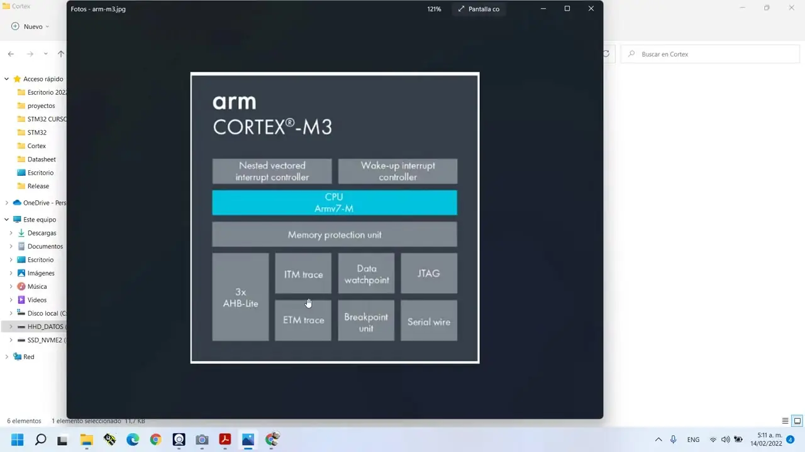
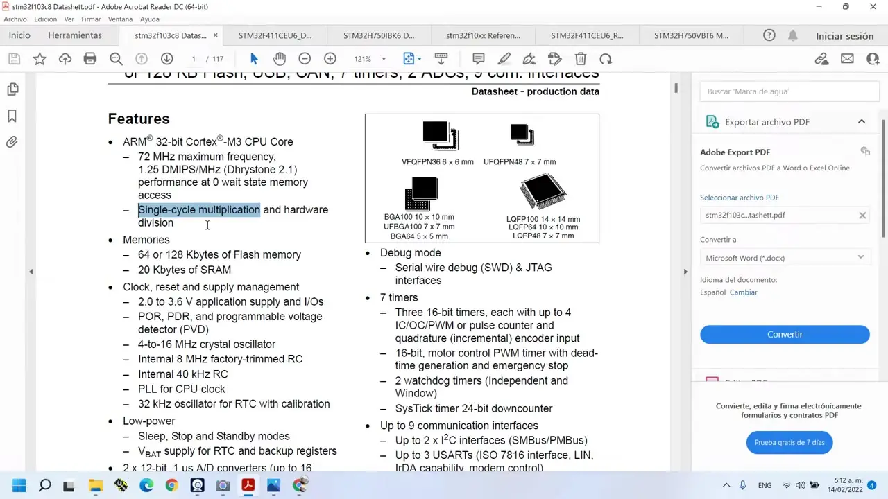
Qué cambia entre un Cortex-M3, un M4 y un M7 (FPU, DSP, caché, memoria externa), qué documentos hay que leer, cuándo usar HAL y cuándo registros, los programas del curso y las tres formas de programar un STM32: ST-Link, UART y USB. Al final, los niveles de protección contra lectura.
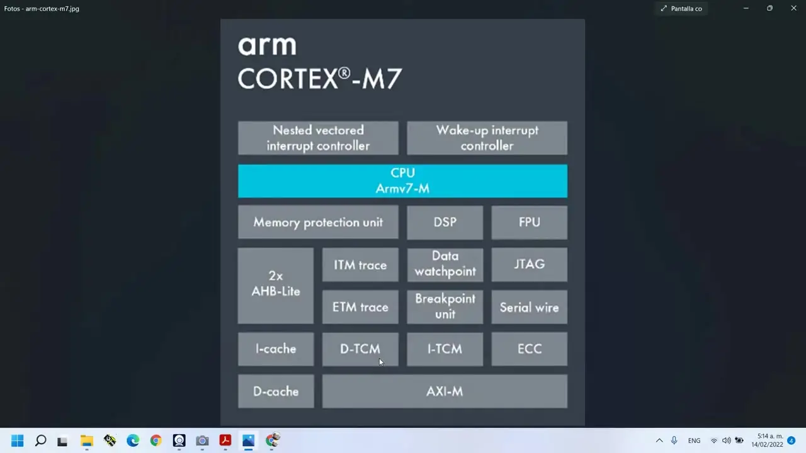
El M3 (por ejemplo, el STM32F103 de la Blue Pill) trae multiplicación en un ciclo y división por hardware, pero no tiene FPU: las operaciones con decimales se hacen por software.


El M4 agrega instrucciones DSP y una FPU de precisión simple (float). Las cuentas con decimales las hace el hardware, y eso da mucha más velocidad. Ejemplo: STM32F411 de la Black Pill. Desde los F42x se puede agregar memoria externa por bus paralelo (FMC) y tienen Chrom-ART (DMA2D) para pantallas TFT.
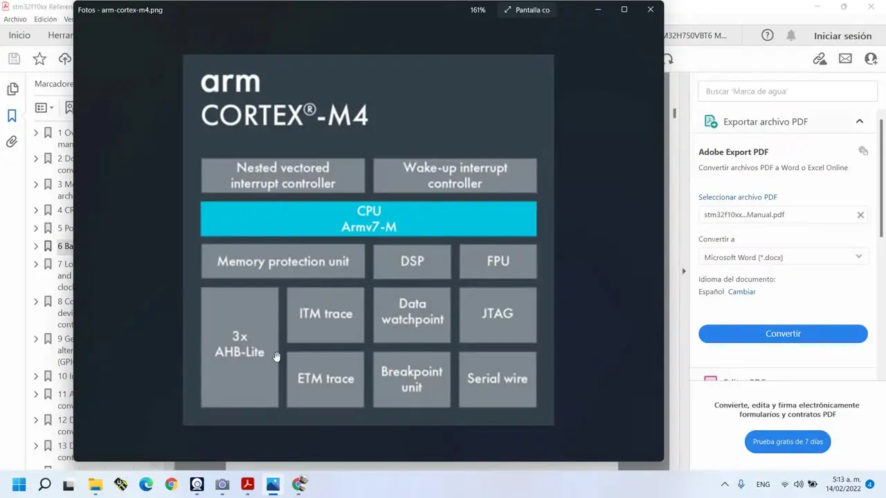
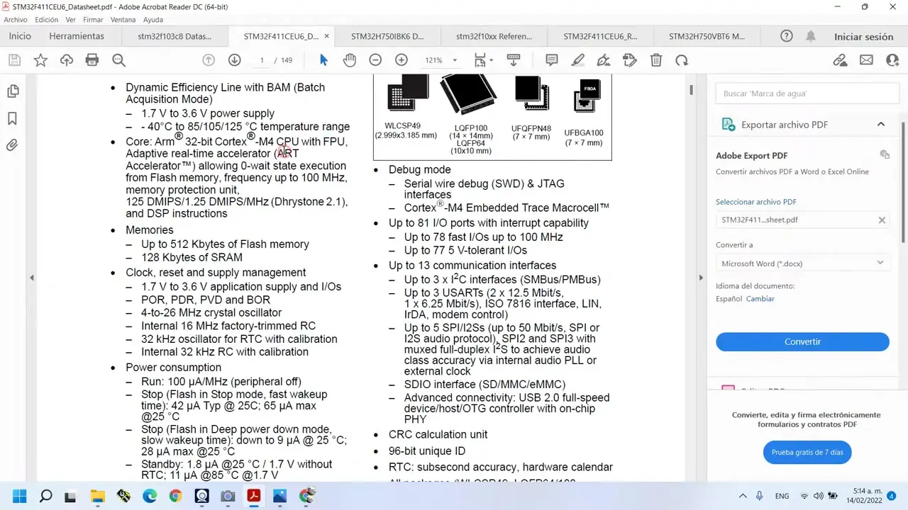
El M7 tiene FPU de doble precisión (útil, por ejemplo, para coordenadas GPS), caché de instrucciones y datos, memorias TCM y memoria externa por Quad-SPI, que usa 4 líneas de datos en vez de una y es mucho más rápida. Ejemplo: STM32H750 a 400 MHz.
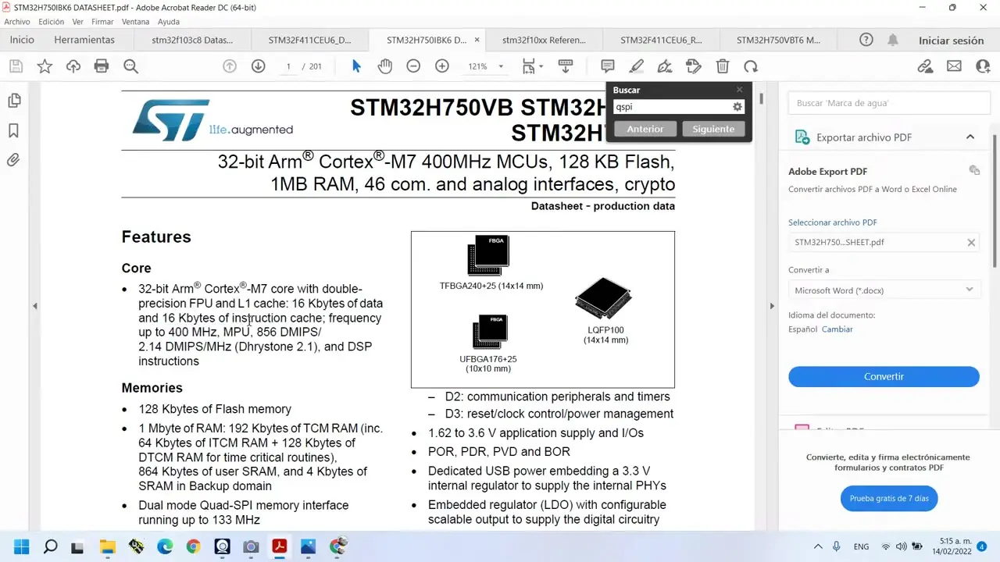
El datasheet da una idea general de un micro en particular. El manual de referencia es de toda la familia y explica cómo se configuran los periféricos registro por registro. A diferencia de los micros de 8 bits, aquí hacen falta los dos.
STM32CubeMX configura el micro de forma gráfica y genera código con la librería HAL. Para usarla está el manual de la HAL: tiene más de 3000 páginas, así que se busca solo lo que se necesita (GPIO, I2C…).
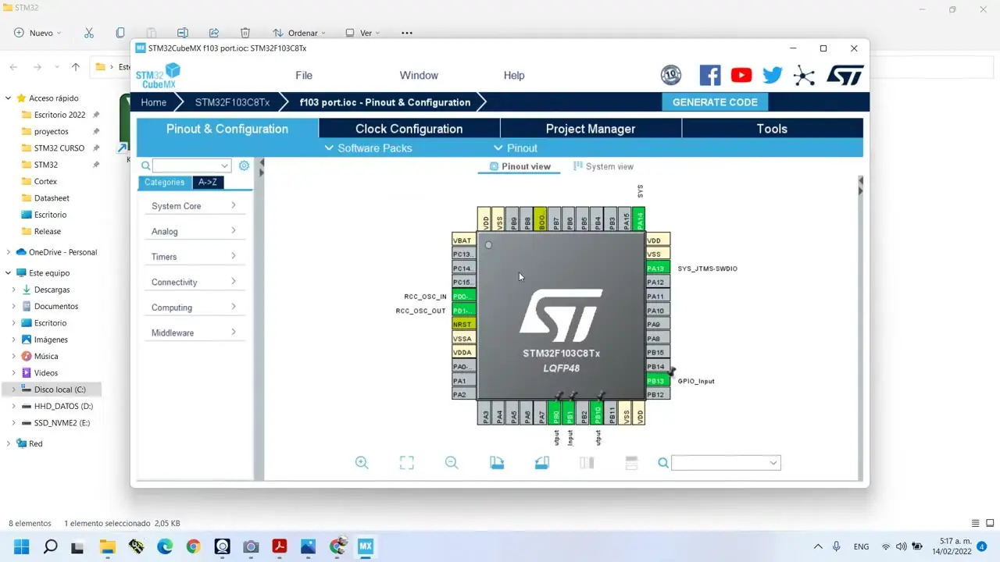
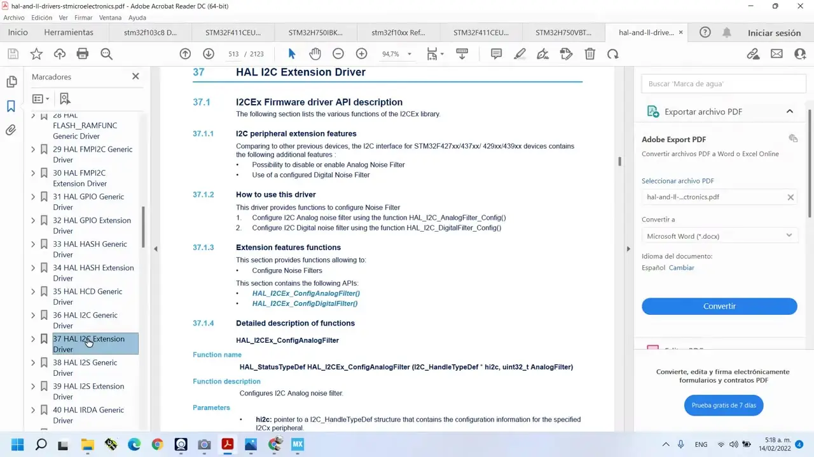
Hay que conocer los registros. Por ejemplo, para una librería 1-Wire, que cambia un pin entre entrada y salida muy rápido, la HAL es lenta. Los registros cambian entre familias: en el M3 los pines se configuran con GPIOx_CRL/CRH, y en el M4 con GPIOx_MODER. Para cosas grandes (USB, FAT en SD) se usa la HAL. Para lo que necesita velocidad, registros.
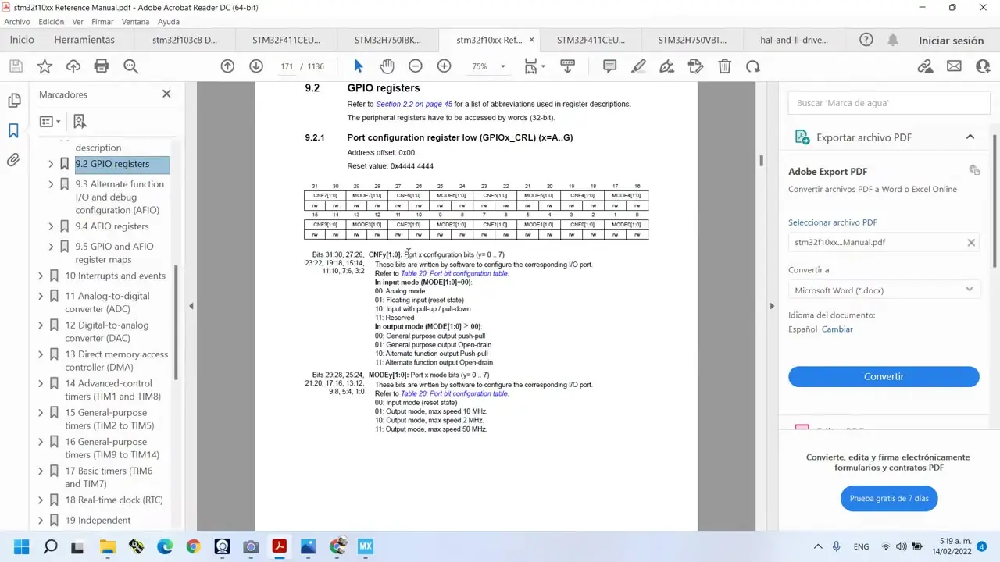
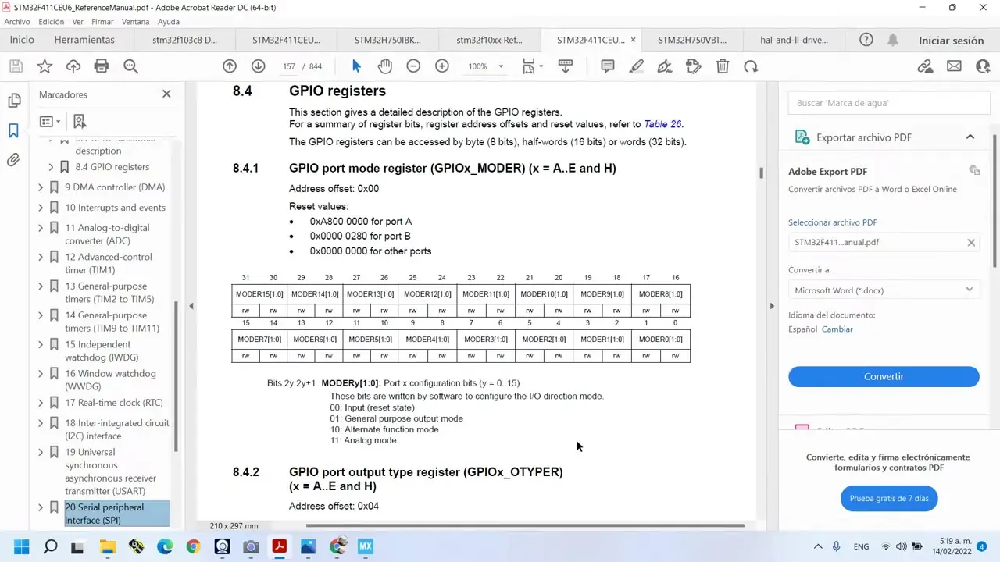
Se conectan GND, SWCLK, SWDIO y 3.3 V. Además de programar, el ST-Link permite depurar (debug).
Todos traen un bootloader en memoria de sistema. En la Blue Pill, con BOOT0 en 1 y un simple cable USB-serial en USART1 (PA9/PA10), STM32CubeProgrammer se conecta por UART y graba el programa.
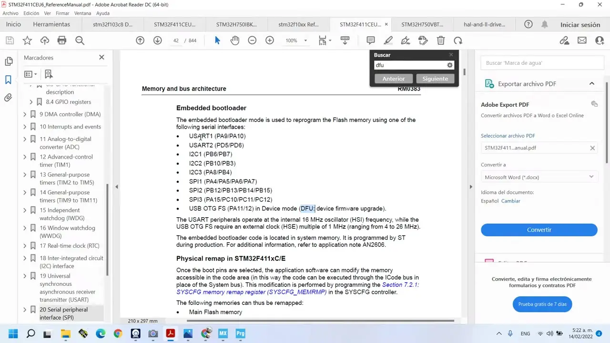
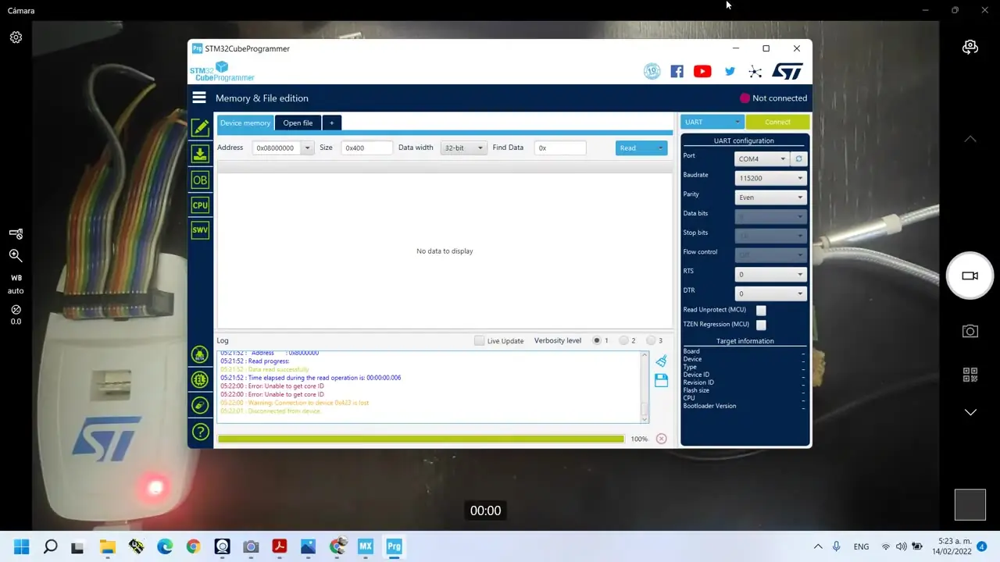
Los F4 y H7 se pueden programar solo con el cable USB, en modo DFU: se mantiene presionado BOOT0, se conecta y en CubeProgrammer se escoge USB. No hace falta programador. Para la Blue Pill se puede cargar un bootloader USB (se verá más adelante).
En CubeProgrammer, en Option bytes → Read Out Protection, se escoge el nivel:
Ojo: el nivel CC es irreversible. Úsalo solo cuando el producto esté terminado.
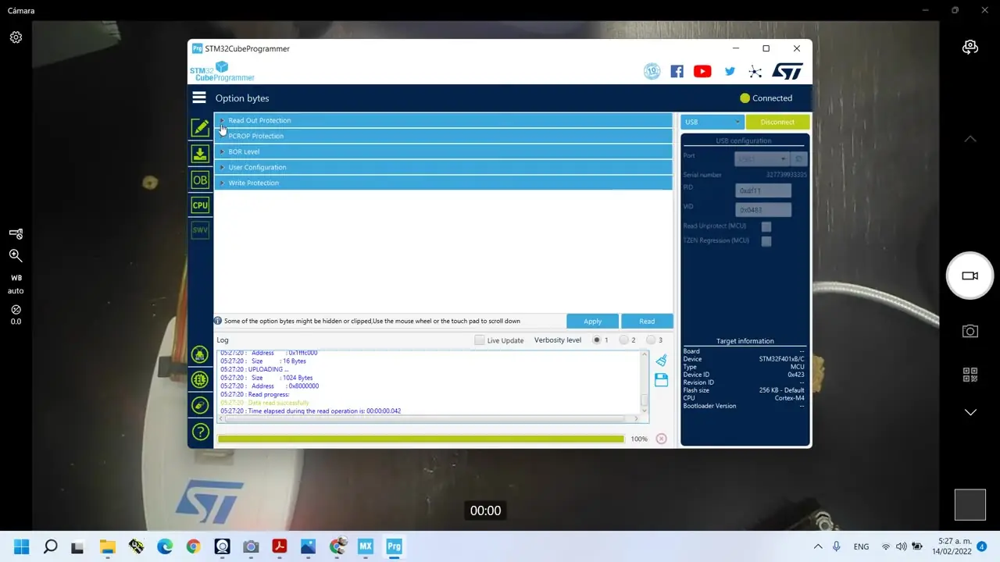
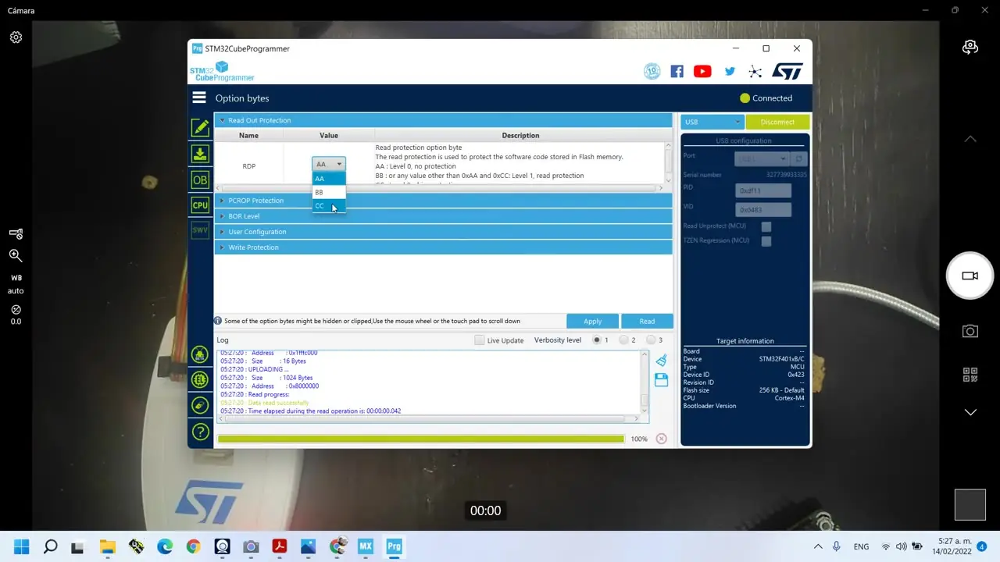